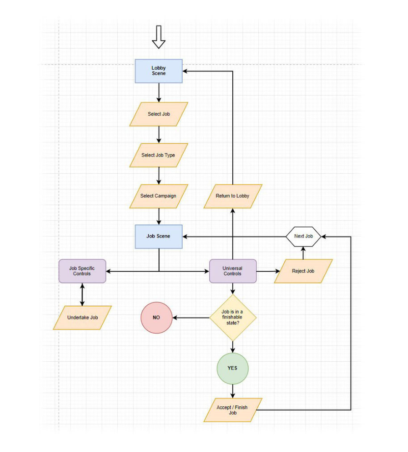

Ergon Energy, one of Queensland's largest energy companies, have a problem - a big one, literally. How big? Managing and maintaining 178,000 kilometres of state-wide power lines and 1.7 million above ground power poles.
"We need to signficantly reduce the time of our campaigns, and the expensive need to send out linesmen to do follow up checks on inconclusive network issues."

WHO IS THE USER?
Senior, experienced linesman, mid 50s, male, Chrome / desktop user
Extremely knowledgable of different component part types and how to accurately rate the severity of a malfunction. They live in two worlds - an office desk job, looking through spreadsheets of endless data to observe various potential network defects, and being called out on certain days to the field to perform a manual investigation. They are desktop computer users, and any solution should be expected to work primarily on this platform.
USER CHALLENGES
"Quite frankly, we don't have a full overview of our network."
"Sending surveyors to manually investigate a pole is very time consuming and can take hours. If we need to do rechecks, it's just eating up time and money"
"We have to run 'campaigns' every year to monitor the network for changes, which can take months, and costs us millions of dollars to undertake"
"If a mistake is made or a key detail is overlooked, the consequences can be catastrophic - bushfires and potential human casualties"
HIGH LEVEL PROPOSAL
Our company (Fugro ROAMES) had proposed an unorthodox technical solution that involved taking digital photos from a helicopter, using a heavily modified camera device that could make use of our company's panted software, to automatically correlate which pole the photos belonged to.

The concept was that if we were able to adequately supply the linesman at their computers with what they'd normally see out in the field (often several hours drive), Ergon Energy would be empowered to make faster, digitally well documented decisions and drastically reduce their callout costs and significantly improve the time efficiency of their linesmen's work tasks. The main question to be answered was how should this data be served up to a front end application, so that the user can perform their normal daily tasks in the most efficient way?
DESIGN
With the intial research completed and the high level proposal for a technical solution out of the way, it was time for me to work with the engineers on a workflow for the application. We invited some of the linesmen to come work with us on site at our office three days a week to ask them questions and get a deeper understanding of their work process, and what these lobby 'tasks' would logically look like.
Some examples tasks they proposed were: identifying the best front and back photo attributed to each pole from the helicopter (to assess whether the quality was high enough to make an informed decision), making sure the photos were attributed to the correct pole, identifying all the component parts making up that particular pole, and then of course, trying to identify if there were any hazards and how severe they were.
I came up with the concept of a 'lobby' system, whereby a linesman can log into the service and find a list of open work tasks or 'jobs' needing to be completed.

One of my goals for the system's design architecture was to create common UI components that would be reusable, regardless of the job type. I attempted to illustrate the workflow and how the interaction between universal and job specific UI elements would work.
After showing the initial screen mockup to some of the users, I received a very important piece of feedback for the user experience:
'Can it be 'dark mode' by default? My eyes will get easily strained if I have to stare at the same bright interface all day.'

My revised 'dark' design was plauded for being easy to use, and I decided to design all of the job interfaces natively for a dark version. Initially I had considered doing both dark and light versions for each interface to give users a choice, but the value proposition didn't match the development overhead.
I wanted to keep pushing the intuitivity of the application as a whole, and decided to program a custom animation system for the project in Unity, with easily reusable, chainable components, so that every user action would have a visual feedback to help them to understand what they need to do next. You can see this in active use in the text and icon animations in this video of a job example:
DELIVERY
Ergon was extremely happy with the scope of our solution. They were able to more than halve their time spent on annual campaigns and saved 7 million AUD annually in the process. Fugro ROAMES was the successful at winning a tender for Essential Energy in New South Wales under very heavy competition to undertake similar work for their power network. The overall project outcome was considered a major success for Fugro ROAMES.
Fugro ROAMES also won additional contract work Fugro's Western Australia offices to implement a similar solution for the marine asset integrity industry. I was once again directly involved and created all the interfaces and flows for the new job types.